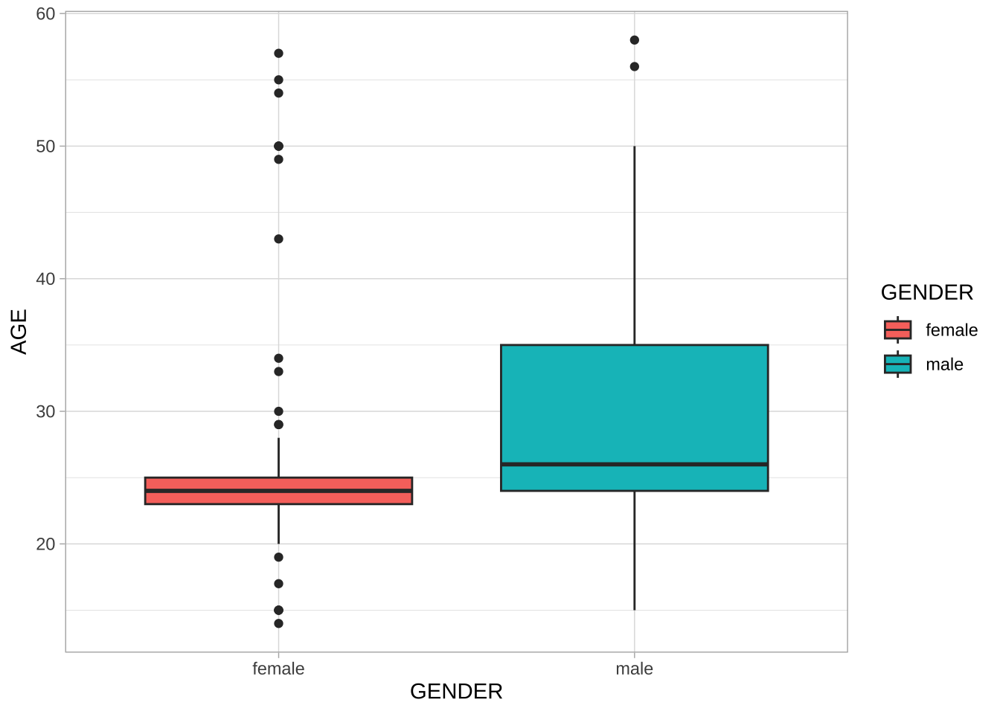

Chapter 13 Vector Space Representation
In this chapter, I would like to talk about the idea of distributional semantics, which features the hypothesis that the meaning of a linguistic unit is closely connected to its co-occurring contexts (co-texts). I will show you how this idea can be operationalized and quantified using the distributional data of the linguistic units in the corpus.
Because English and Chinese text processing requires slightly different procedures, this chapter will first focus on English texts.
13.1 Data Processing Flowchart
In Chapter 5, I have provided a data processing flowchart for the English texts. Here I would like to add to the flowchart several follow-up steps with respect to the vector-based representation of semantic.
Most importantly, a new object class is introduced in Figure 13.1, i.e., the dfm object in quanteda. It stands for Document-Feature-Matrix. It’s a two-dimensional co-occurrence table, with the rows being the documents in the corpus, and columns being the features used to characterizing the documents. The cells in the matrix often refer to the co-occurrence statistics between each document and the feature.
Different ways of operationalizing the features and the cell values may lead to different types of dfm. In this chapter, I would like to show you how we create a dfm of a corpus and what are the common ways to define features and cell valus for the analysis of semantics via vector space representation.
Figure 13.1: English Text Analytics Flowchart (v2)
13.2 Document-Feature Matrix (dfm)
To create a dfm, i.e., Dcument-Feature-Matrix, quanteda provides two alterantives:
- create
dfmbased on ancorpusobject - create
dfmbased on antokensobject
For English data, quanteda can take care of the word tokenization fairly well so you can create dfm directly from corpus (See Figure 13.1)
In Chapter (???)(chinese-text-processing), we stress that the default tokenization method in quanteda with Chinese data may be limited in several ways. In order to create a dfm that takes into account the appropriateness of the Chinese word segmentation, I would highly recommend you to first create atokens object using the self-defined word segmentation methods, and then feed it to dfm() to create the dfm for your corpus. In this way, the dfm will use the segmented results defined by your word segmenter.
In other words, with Chinese data, probably it is not really necessary to have a corpus object; rather, a token object of the corpus might be more useful/practical. (In quanteda, most of the functions for corpus can be applied to tokens as well, e.g., kwic(), dfm())
13.3 Corpus
In this chapter, I will use the same English dataset we discussed in Chapter 5, the data_corpus_inaugural preloaded in the package quanteda.
For English data, the process is simple: we first load the corpus and create a dfm object of the corpus using dfm().
Please note that the default data_corpus_inaugural preloaded with quanteda is a corpus object already.
## [1] "corpus" "character"## [1] "corpus" "character"## [1] "dfm"
## attr(,"package")
## [1] "quanteda"13.4 Document-Feature Matrix (dfm)
What is dfm anyway? A document-feature-matrix is no different from a spead-sheet like table. In a dfm, each row refers to a document in the corpus, and the column refers to a linguistic unit that occurs in the document(s). If the linguistic unit you are interested in is a word, then this is a document-word-matrix, with the columns referring to all the words observed in the corpus, i.e., the vocabulary of the corpus. If the linguistic unit you are interested in is an n-gram, then this is a document-ngram-matrix, with the columns referring to all the n-grams observed in the corpus.
What about the cells? What values are usually stored in the matrix? The most intuitive values in the cells are the co-occurrence frequencies, i.e., the number of occurrences of the linguistic unit (i.e., column) in a particular document (i.e., row). For example, in the following example, we can see that in the first document, i.e., 1789-Washington, there are 2 occurrences of representatives, 48 occurrences of and
## Document-feature matrix of: 10 documents, 10 features (43.0% sparse) and 4 docvars.
## features
## docs fellow-citizens of the senate and house representatives :
## 1789-Washington 1 71 116 1 48 2 2 1
## 1793-Washington 0 11 13 0 2 0 0 1
## 1797-Adams 3 140 163 1 130 0 2 0
## 1801-Jefferson 2 104 130 0 81 0 0 1
## 1805-Jefferson 0 101 143 0 93 0 0 0
## 1809-Madison 1 69 104 0 43 0 0 0
## features
## docs among vicissitudes
## 1789-Washington 1 1
## 1793-Washington 0 0
## 1797-Adams 4 0
## 1801-Jefferson 1 0
## 1805-Jefferson 7 0
## 1809-Madison 0 0
## [ reached max_ndoc ... 4 more documents ]A dfm with words as the features is the simplest way to characterize the texts in the corpus, namely, to analyze the semantics of the documents by looking at the words occurring in the documents. This document-by-word matrix treats each text as bags of words. In other words, how the words are arranged relative to each other is ignored (i.e., the morphosyntactic relationships between words in texts are greatly ignored). Therefore, this document-by-word dfm should be a naive characterization of the texts.
In many computational tasks, however, it turns out that this simple bag-of-words model is very effective in modeling the semantics of the documents.
13.5 Distributional Hypothesis and Distance/Similarity Metrics
The effectiveness of the dfm in semantic analysis lies in one important hypoethesis shared in the corpus linguistic community: distributional hypothesis.
Distributional properties like co-occurrences are very important information in corpus linguistics. Most of the studies in corpus linguistics adopt an implicit distributional hypothesis, which can be illustrated by a few famous quotes:
You shall know a word by the comany it keeps. (Firth, 1957, p.11)
[D]ifference of meaning correlates with difference of distribution. (Harris, 1970, p.785)
The meaning of a [construction] in the network is represented by how it is linked to other words and how these are interlinked themselves (De Deyne et al. 2016)
So in our current context, the idea is that if two documents have similar sets of linguistic units popping up in them, they are more likely to be similar in their semantics as well.
The advantage of creating a document-feature-matrix is that now each document is not only a series of character strings, but also a list of numeric values (i.e., a row of co-occurring frequencies), which can be compared mathematically with other documents (i.e., other rows).
Take a two-dimensional space for instance. If we have vectors on this space, we can compute their distance/similarity mathematically:
Figure 13.2: Vector Representation
In Math, there are in general two types of metrics to measure the relationship between vectors: distance-based vs. similarity-based metrics.
13.5.1 Distance-based Metrics
Many distance measures of vectors are based on the following formula and differ in individual parameter settings.
\[\big( \sum_{i = 1}^{n}{|x_i - y_i|^y}\big)^{\frac{1}{y}}\]
The n in the above formula refers to the number of dimensions of the vectors. (In other words, all the concepts we discuss here can be easily extended to vectors in multidimensional spaces.)
When y is set to 2, it computes the famous Euclidean distance of two vectors, i.e., the direct spatial distance between two points on the n-dimensional space.
## [1] 6## [1] 4.472136## [1] 8.944272The geometrical meanings of the Euclidean distance are easy to conceptualize (c.f., the dashed lines in Figure 13.3)

Figure 13.3: Distance-based Metric: Euclidean Distance
13.5.2 Similarity-based Metrics
In addition to distance-based metrics, the other type is similarity-based metric, which often utilizes the idea of correlations. The most commonly used one is Cosine Similarity, which can be computed as follows:
\[cos(\vec{x},\vec{y}) = \frac{\sum_{i=1}^{n}{x_i\times y_i}}{\sqrt{\sum_{i=1}^{n}x_i^2}\times \sqrt{\sum_{i=1}^{n}y_i^2}}\]
## [1] 0.9778024## [1] 0.4961389## [1] 0.3032037The geometric meanings of cosines of two vectors are connected to the arcs between the vectors: the great their cosine similarity, the smaller the arcs, the closer they are.

13.5.3 Interim Summary
The Euclidean Distance metric is a distance-based metric: the larger the value, the more distant the two vectors.
The Cosine Similarity metric is a similatiry-based metric: the larger the value, the closer the two vectors.
Based on our computations of the metrics for the three vectors, now in terms of the Euclidean Distance, y and z are closer; in terms of Cosine Similarity, x and y are closer.
Therefore, it should now be clear that the analyst needs to decide which metric to use, or more importantly, which metric is more relevant. The key is which of the following is more important in the semantic representation of the linguistic units:
- The absolute value differences that the vectors have on each dimension (i.e., the lengths of the vectors)
- The relative increase/decrease of the values on ecah dimension (i.e., the curvatures of vectors)
There are many other distance-based or similarity-based metrics available. For more detail, please see Manning and Schütze (1999) Ch15.2.2. and Jurafsky and Martin (2020) Ch6: Vector Semantics and Embeddings.
13.6 Multidimensiona Space
Back to our example of dfm, it is essentially the same vector representation, but in a multidimensional verson (cf. Figure 13.4). The document in each row is represented as a vector of N dimensional space. The size of N depends on the number of linguistic units that are included in the analysisdfm`.

Figure 13.4: Example of Document-Feature Matrix
13.7 Vector Semantics Considerations
When representing semantics of linguistic units in vector space, two factors would turn out to be very crucial:
- which features should be included in the analysis of multidimensional representation?
- which quantitative metrics should be used to represent the relationship between the linguistic unit and the features?
In our current dfm based on bags of words, our concerns would be:
- which words should be included in the analysis of multidimensional representation?
- which quantitative metrics should be used to represent the relationship between the texts and the words?
13.8 Feature Selection
A dfm may not be as informative as we have expected. To better capture the documental semantic similarity, there are several important factors that need to be more carefully considered with respect to the features of the dfm:
- The granularity of the features
- The informativeness of the features
- The distributional properties of the features
13.8.1 Granularity
In our previous example, we include only words, i.e., unigrams, as our features in the dfm. We can in fact include linguistic units at multiple granularities:
- words
- (skipped) n-grams
- lemmas/stems
For example, if you want to include bigrams, not unigrams, as features in the dfm, you can do the following:
- from `corpus` -> `tokens`
- from `tokens` -> `ngram-based tokens`
- from `ngram-based tokens` -> `dfm`corp_us_dfm_ngram <- corp_us %>%
tokens(what = "word") %>%
tokens_ngrams(n=2) %>% dfm
corp_us_dfm_ngram[1:10, 1:10]## Document-feature matrix of: 10 documents, 10 features (71.0% sparse) and 4 docvars.
## features
## docs fellow-citizens_of of_the the_senate senate_and and_of
## 1789-Washington 1 20 1 1 2
## 1793-Washington 0 4 0 0 1
## 1797-Adams 0 29 0 0 2
## 1801-Jefferson 0 28 0 0 3
## 1805-Jefferson 0 17 0 0 1
## 1809-Madison 0 20 0 0 2
## features
## docs the_house house_of of_representatives representatives_:
## 1789-Washington 2 2 2 1
## 1793-Washington 0 0 0 0
## 1797-Adams 0 0 0 0
## 1801-Jefferson 0 0 0 0
## 1805-Jefferson 0 0 0 0
## 1809-Madison 0 0 0 0
## features
## docs :_among
## 1789-Washington 1
## 1793-Washington 0
## 1797-Adams 0
## 1801-Jefferson 0
## 1805-Jefferson 0
## 1809-Madison 0
## [ reached max_ndoc ... 4 more documents ]Or for English data, if you want to ignore the stem variations between words (i.e., house and houses may not be differ so much), you can do it this way:
## Document-feature matrix of: 10 documents, 10 features (38.0% sparse) and 4 docvars.
## features
## docs fellow-citizen of the senat and hous repres : among
## 1789-Washington 1 71 116 1 48 2 2 1 1
## 1793-Washington 0 11 13 0 2 0 0 1 0
## 1797-Adams 3 140 163 1 130 3 3 0 4
## 1801-Jefferson 2 104 130 0 81 0 1 1 1
## 1805-Jefferson 0 101 143 0 93 0 0 0 7
## 1809-Madison 1 69 104 0 43 0 1 0 0
## features
## docs vicissitud
## 1789-Washington 1
## 1793-Washington 0
## 1797-Adams 0
## 1801-Jefferson 0
## 1805-Jefferson 0
## 1809-Madison 1
## [ reached max_ndoc ... 4 more documents ]You need to decide which type of linguistic units is more relevant to your research question. In many text mining applications, people often make use of both unigrams and n-grams. However, these are only heuristics, not rules.
corp_us, can you create a dfm, where the features are trigrams but all the words in the trigrams are word stems not the original surface word forms? (see below)
13.8.2 Informativeness
There are words that are not so informative in telling us the similarity and difference between the documents because they almost appear in every document of the corpus, but carray little (referential) semantic contents. These words are usually the function words, such as and, the, of. The common words in almost all documents are often referred to as stopwords. Therefore, it is not uncommon that analysts sometimes create a list of stopwords to be removed from the dfm. The library quanteda has defined a default English stopword list, i.e., stopwords("en").
## [1] "i" "me" "my" "myself" "we"
## [6] "our" "ours" "ourselves" "you" "your"
## [11] "yours" "yourself" "yourselves" "he" "him"
## [16] "his" "himself" "she" "her" "hers"
## [21] "herself" "it" "its" "itself" "they"
## [26] "them" "their" "theirs" "themselves" "what"
## [31] "which" "who" "whom" "this" "that"
## [36] "these" "those" "am" "is" "are"
## [41] "was" "were" "be" "been" "being"
## [46] "have" "has" "had" "having" "do"
## [51] "does" "did" "doing" "would" "should"
## [56] "could" "ought" "i'm" "you're" "he's"
## [61] "she's" "it's" "we're" "they're" "i've"
## [66] "you've" "we've" "they've" "i'd" "you'd"
## [71] "he'd" "she'd" "we'd" "they'd" "i'll"
## [76] "you'll" "he'll" "she'll" "we'll" "they'll"
## [81] "isn't" "aren't" "wasn't" "weren't" "hasn't"
## [86] "haven't" "hadn't" "doesn't" "don't" "didn't"
## [91] "won't" "wouldn't" "shan't" "shouldn't" "can't"
## [96] "cannot" "couldn't" "mustn't" "let's" "that's"
## [101] "who's" "what's" "here's" "there's" "when's"
## [106] "where's" "why's" "how's" "a" "an"
## [111] "the" "and" "but" "if" "or"
## [116] "because" "as" "until" "while" "of"
## [121] "at" "by" "for" "with" "about"
## [126] "against" "between" "into" "through" "during"
## [131] "before" "after" "above" "below" "to"
## [136] "from" "up" "down" "in" "out"
## [141] "on" "off" "over" "under" "again"
## [146] "further" "then" "once" "here" "there"
## [151] "when" "where" "why" "how" "all"
## [156] "any" "both" "each" "few" "more"
## [161] "most" "other" "some" "such" "no"
## [166] "nor" "not" "only" "own" "same"
## [171] "so" "than" "too" "very" "will"Also, there are tokens that usually carry very limited semantic contents, such as numbers and punctuation. Numbers, symbols and punctuations are often treated differently in computational text analytics.
When creating the dfm object, we can further specify a few parameters for the function dfm():
remove_punct = TRUE: remove all punctuation tokensremove = vector(): remove all words specified in the character vector here
corp_us_dfm_stp <- corp_us %>%
dfm(remove_punct = T,
remove = stopwords("en"))
corp_us_dfm_stp[1:10, 1:10]## Document-feature matrix of: 10 documents, 10 features (60.0% sparse) and 4 docvars.
## features
## docs fellow-citizens senate house representatives among
## 1789-Washington 1 1 2 2 1
## 1793-Washington 0 0 0 0 0
## 1797-Adams 3 1 0 2 4
## 1801-Jefferson 2 0 0 0 1
## 1805-Jefferson 0 0 0 0 7
## 1809-Madison 1 0 0 0 0
## features
## docs vicissitudes incident life event filled
## 1789-Washington 1 1 1 2 1
## 1793-Washington 0 0 0 0 0
## 1797-Adams 0 0 2 0 0
## 1801-Jefferson 0 0 1 0 0
## 1805-Jefferson 0 0 2 0 0
## 1809-Madison 0 0 1 0 1
## [ reached max_ndoc ... 4 more documents ]We can see that the number of features drops significantly after we remove stopwords:
## [1] 63591## [1] 9360## [1] 9210## [1] 554413.8.3 Distributional Properties
Depending on the granularity of the features you are considering, you may get a considerably large number (e.g., thousands of ngrams) of features in your dfm matrix.
Another criteria relating to the distinctiveness of the features are their distributional properties. These can be very complicated but here we simplify these distributional criteria into three types:
- Frequency
- To make sure that the feature is important, we probably need to set a cut-off minimum frequency for a feature. For example, if the word occurs only once in the corpus (i.e., hapax legomenon), these words can be highly idiosyncratic usage, which is of little help in capturing the cross-document similarity. But on the other hand, we can also control the maximum frequency of the feature. If the word occurrs in all documents, they won’t help much as well.
- Dispersion
- If a word is more widely dispersed across different documents, they may be more informative in telling us the semantics of a group of documents. However, if a word occurs only in one particular document, this centralized distribution of the word may indicate that this feature is too domain-specific. Therefore, sometimes we can control the document frequency of the features (i.e., in how many different texts does the feature occur?)
- Other self-defined weights
- It is true that many other factors may have a great impact on the co-occurrence frequencies we discuss so far. For example, given a co-occurrence frequency n for a word w in a text d, the significance of this n may be connected to:
- the document size of d
- the total number of w
- Also sometimes the importance of features comes with the theoretical assumptions. For example, in modeling the semantics of the documents, it is probably intuitive to assume that content words should carry more semantic content than functional words. So in the
dfmwe can include only words belonging to the lexical categories, such as nouns and verbs.
- It is true that many other factors may have a great impact on the co-occurrence frequencies we discuss so far. For example, given a co-occurrence frequency n for a word w in a text d, the significance of this n may be connected to:
quanteda for weighting of the document-feature matrix: dfm_weight(), dfm_tfidf().
In the following demo, we adopt a few simple distrubtional criteria:
- we use a simple unigram model
- we remove stopwords, punctuations, numbers, and symbols
- we remove words whose freqency <= 10, docfreq <= 3, docfreq = ndoc(CORPUS)
corp_us_dfm_trimmed <- corp_us %>%
dfm(remove = stopwords("en"),
remove_punct = T,
remove_numbers= T,
remove_symbols = T) %>%
dfm_trim(min_termfreq = 10, termfreq_type = "count",
min_docfreq = 3, max_docfreq = ndoc(corp_us)-1,
docfreq_type = "count")
nfeat(corp_us_dfm_trimmed)## [1] 1387## Document-feature matrix of: 10 documents, 10 features (52.0% sparse) and 4 docvars.
## features
## docs fellow-citizens senate house representatives among life event
## 1789-Washington 1 1 2 2 1 1 2
## 1793-Washington 0 0 0 0 0 0 0
## 1797-Adams 3 1 0 2 4 2 0
## 1801-Jefferson 2 0 0 0 1 1 0
## 1805-Jefferson 0 0 0 0 7 2 0
## 1809-Madison 1 0 0 0 0 1 0
## features
## docs greater order received
## 1789-Washington 1 2 1
## 1793-Washington 0 0 0
## 1797-Adams 0 4 0
## 1801-Jefferson 1 1 0
## 1805-Jefferson 0 3 0
## 1809-Madison 0 0 0
## [ reached max_ndoc ... 4 more documents ]13.9 Exploratory Analysis of dfm
- We can check the top features in the current corpus:
## people government us can upon must great
## 575 564 478 471 371 366 340
## may states shall
## 338 333 314- We can visualize the top features using a word cloud:
require(RColorBrewer)
set.seed(100)
textplot_wordcloud(corp_us_dfm_trimmed, max_words = 200, random_order = FALSE,
rotation = .25,
color = c('red', 'pink', 'green', 'purple', 'orange', 'blue'))
13.10 Document Similarity
As shown in 13.4, with the N-dimensional vector representation of each document, we can easily compute the mathematical distances/similarities between two documents.
In Section 13.5, we introduced two important metrics:
- distance-based metric: Euclidean Distance
- similarity-based metric: Cosine Similarity
quanteda provides useful functions to compute these metrics (as well as other alternatives): textstat_simil() and textstat_dist():
corp_us_euclidean <- corp_us_dfm_trimmed %>%
dfm_weight(scheme="prop") %>%
textstat_dist(method="euclidean")
corp_us_cosine <- corp_us_dfm_trimmed %>%
dfm_weight(scheme="prop") %>%
textstat_simil(method="cosine")
corp_us_euclidean[1:5,1:5]## 5 x 5 Matrix of class "dspMatrix"
## 1789-Washington 1793-Washington 1797-Adams 1801-Jefferson
## 1789-Washington 1.070008e-08 0.1524448 0.07003297 7.371303e-02
## 1793-Washington 1.524448e-01 0.0000000 0.15290542 1.527390e-01
## 1797-Adams 7.003297e-02 0.1529054 0.00000000 7.148902e-02
## 1801-Jefferson 7.371303e-02 0.1527390 0.07148902 4.562530e-09
## 1805-Jefferson 7.126417e-02 0.1530932 0.07194156 6.427144e-02
## 1805-Jefferson
## 1789-Washington 0.07126417
## 1793-Washington 0.15309316
## 1797-Adams 0.07194156
## 1801-Jefferson 0.06427144
## 1805-Jefferson 0.00000000## 5 x 5 Matrix of class "dspMatrix"
## 1789-Washington 1793-Washington 1797-Adams 1801-Jefferson
## 1789-Washington 1.0000000 0.2958278 0.5558610 0.4748221
## 1793-Washington 0.2958278 1.0000000 0.2865581 0.2763780
## 1797-Adams 0.5558610 0.2865581 1.0000000 0.4959554
## 1801-Jefferson 0.4748221 0.2763780 0.4959554 1.0000000
## 1805-Jefferson 0.4950774 0.2655092 0.4738698 0.5440536
## 1805-Jefferson
## 1789-Washington 0.4950774
## 1793-Washington 0.2655092
## 1797-Adams 0.4738698
## 1801-Jefferson 0.5440536
## 1805-Jefferson 1.0000000Based on the distances/similarities, we can further examine how different documents may cluster together in terms of their features (lexical) distributions. Here we apply the hierarchical cluster analysis to examine the sub-groupings of the documents.
# distance-based
corp_us_hist_euclidean <- corp_us_euclidean %>% as.dist %>% hclust
plot(corp_us_hist_euclidean,hang = -1, cex = 0.7)# similarity
corp_us_hist_cosine <- (1 - corp_us_cosine) %>% as.dist %>% hclust
plot(corp_us_hist_cosine,hang = -1, cex = 0.7)
Please note that textstat_simil() gives us the similarity matrix. In other words, the numbers in the matrix indicate how similar the documents are. However, for hierarchical cluster analysis, the function hclust() expects a distance-based matrix, namely one indicating how dissimilar the documents are. That is the main reason why we use (1 - corp_us_cosine) in the cosine example.
Cluster anlaysis is a very useful exploratory technique to examine the emerging structure of a large dataset. For more detail introduction to this statistical method, I would recommend Gries (2013) Ch 5.6.
13.11 Feature-Coocurrence Matrix (fcm)
We can convert a document-feature matrix into a feature-cooccurrence matrix fmc, using the quanteda::fcm(). The fmc includes the co-occurrence frequencies of any two features within the same documents.
## Feature co-occurrence matrix of: 10 by 10 features.
## features
## features fellow-citizens senate house representatives among life event
## fellow-citizens 72 64 15 62 106 50 25
## senate 0 13 16 29 36 30 2
## house 0 0 3 11 11 32 6
## representatives 0 0 0 8 45 33 11
## among 0 0 0 0 155 240 26
## life 0 0 0 0 0 208 21
## event 0 0 0 0 0 0 9
## greater 0 0 0 0 0 0 0
## order 0 0 0 0 0 0 0
## received 0 0 0 0 0 0 0
## features
## features greater order received
## fellow-citizens 82 52 26
## senate 35 19 6
## house 14 14 3
## representatives 28 29 9
## among 144 209 21
## life 136 182 16
## event 16 15 12
## greater 44 76 19
## order 0 98 12
## received 0 0 2In quanteda, we can generate the fcm of a corpus, either directly from the corpus object or from the dfm object. The feature-cooccurrence matrix measures the co-occurrences of features within a user-defined context.
- If the input of
fcmis adfmobject, the context is set to be documents. In other words, the counts infcmrefers to the number of co-occurrences the two features within the same document. - If the input of
fmcis acorpusobject, we can specify the context to be a window size. The counts infcmrefers to the number of co-occurrences the two features within the window size.
We can the structure of the fcm with a simple example:
x <- c("A B C A E F G", "B C D E F G", "B D A E F G")
corpus(x) %>%
dfm %>%
fcm # fcm based on document context## Feature co-occurrence matrix of: 7 by 7 features.
## features
## features a b c e f g d
## a 1 3 2 3 3 3 1
## b 0 0 2 3 3 3 2
## c 0 0 0 2 2 2 1
## e 0 0 0 0 3 3 2
## f 0 0 0 0 0 3 2
## g 0 0 0 0 0 0 2
## d 0 0 0 0 0 0 0## Feature co-occurrence matrix of: 7 by 7 features.
## features
## features A B C E F G D
## A 0 3 2 2 2 0 1
## B 0 0 2 0 0 0 2
## C 0 0 0 2 0 0 1
## E 0 0 0 0 3 3 2
## F 0 0 0 0 0 3 1
## G 0 0 0 0 0 0 0
## D 0 0 0 0 0 0 0## Feature co-occurrence matrix of: 7 by 7 features.
## features
## features A B C E F G D
## A 1 3 2 3 3 3 1
## B 0 0 2 3 3 3 2
## C 0 0 0 2 2 2 1
## E 0 0 0 0 3 3 2
## F 0 0 0 0 0 3 2
## G 0 0 0 0 0 0 2
## D 0 0 0 0 0 0 0fmc is an interesting structure because, similar to dfm, we can now examine the pairwise relationships between features. More specifically, we get to see how features (i.e., words, n-grams etc) are connected, or to what extent features are similar in their co-occurring contexts.
# select top 30 features
corp_us_topfeatures <- names(topfeatures(corp_us_fcm, 50))
# plot network
fcm_select(corp_us_fcm, pattern = corp_us_topfeatures) %>%
textplot_network(min_freq = 100)
The dfm or fcm come with many potentials. Please refer to the quanteda documentation for more applications.
Exercise 13.3 Please create a network of the top 30 bigrams based on the corpus corp_us. The criteria for bigrams selection are as follows:
- Include bigrams that consist of alphanumeric characters only (no punctuations)
- Include bigrams whose frequency >= 10 and docfreq >= 5 but <= half number of the corpus
References
Gries, Stefan Th. 2013. Statistics for Linguistics with R: A Practical Introduction. 2nd Edition. Walter de Gruyter.
Jurafsky, Dan, and James H. Martin. 2020. “Speech & Language Processing 3rd.” Available at https://web.stanford.edu/~jurafsky/slp3/ (Accessed on 2020/04/01).
Manning, Christopher D, and Hinrich Schütze. 1999. Foundations of Statistical Natural Language Processing. MIT press.